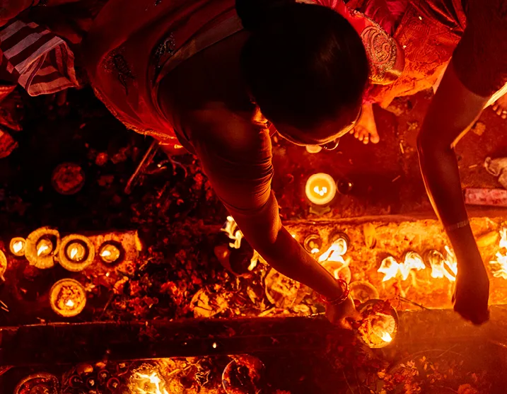
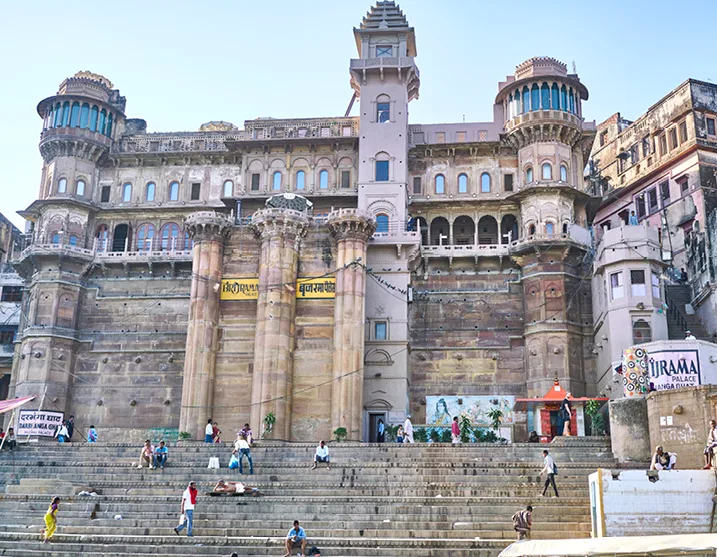
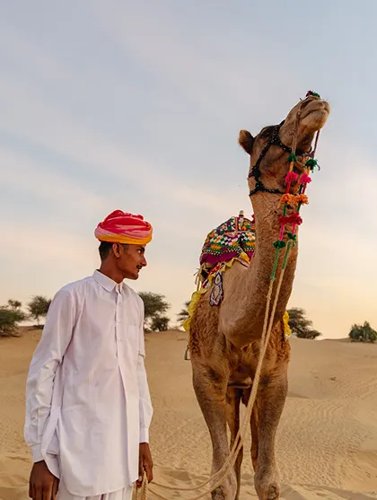

TRIP DESCRIPTION (NOVEMBER 4-13, 2023 / 9 NIGHTS)
While it is a myth that all of India can be seen lit on this one night from space, Diwali does truly illuminate the country. It is a time to celebrate light over darkness and good over evil. Feasts and pujas (rituals) abound.
The 9-night trip through the north begins in the Hindu holy city of Varanasi, a tangled web of temples, palaces, mosques and shrines that rise from the ghats (steps) along the left bank of the Ganges river to form one of the world's oldest continually inhabited cities.
As a place of devotion and worship, Varanasi attracts thousands of pilgrims every year who come to wash away sins and perform funeral rites, bearing witness to the sacred cycle of life. On the banks of this river, life's most intense and intimate moments are shared with all. Guests will stay at the Brijrama Palace, a two hundred year-old building that is perched on the banks of the Ganges.
Continue on to Jaipur, a heaving city filled with bazaars and traditional ateliers. Stay at the Samode Haveli, a historical palace surrounded by verdant courtyards in the heart of the old city. Visit craftspeople who, using simple tools and ancient traditions, create an extraordinary variety of handicrafts from block printing (much still done by chippas, a caste of printers) to lacquer bangles and Gota work (the gold or silver embroidery of Rajasthan).
Visit the Gem Palace atelier, one of the oldest jewelry makers in India, for a private shopping experience. Buy and commission one-of-a-kind designs at this family-run emporium which has created for royal families, dignitaries and celebrities. Visit the sprawling pink city palace complex, a mix of predominantly Rajput and Mugal architecture; explore the Amber Fort and later, the Badal Mahal (Cloud Palace) where the current Princess of Jaipur, Diya Kumari, has established a women’s empowerment NGO. Shop for fine handicrafts, antique textiles and block prints on our curated tour of PRIOR’s favorite stores and ateliers. Toast the end of the day with a drink at Bar Palladio, a bright blue jewel box-like space located within the Narain Niwas Palace Hotel.
The journey’s final stop is in the desert of Jaisalmer, a former medieval trading center untouched by time in the heart of the Thar Desert. Known as the "Golden City," it is famed for its yellow sandstone architecture and the Jaisalmer Fort, an imposing hilltop citadel. Stay at the legendary SUJÁN The Serai, an opulent camp where the desert landscape will be lit by hundreds of diyas (small candles made of clay with Ghee or oil used as the fuel) in a private evening celebration of Diwali.

PRICING DETAILS
In order to confirm your reservation, a 50% non-refundable deposit is required at the time of the booking. The remaining balance will be charged 150 days prior to the beginning of the trip.
-Double Occupancy Room (2 people in 1 room): $12,450 per person
-Single Occupancy Room (1 person in 1 room): $15,975 person

INCLUSIONS:
-Accommodations at the following properties: Andaz in New Delhi, Brijrama Palace in Varanasi, Samode Haveli in Jaipur, SUHAN The Serai in Jaisalmer
-All tours and admission costs throughout the itinerary
-All meals throughout the itinerary
-All transportation throughout the itinerary
-Domestic airfare
-Arrival and departure airport transfers
-Gratuities
EXCLUSIONS:
-International airfare
-Any visa or travel requirements for entry into India
-Portage at airports
-Travel Insurance
-Personal expenses
-Other meals and alcoholic beverages not stated in itinerary